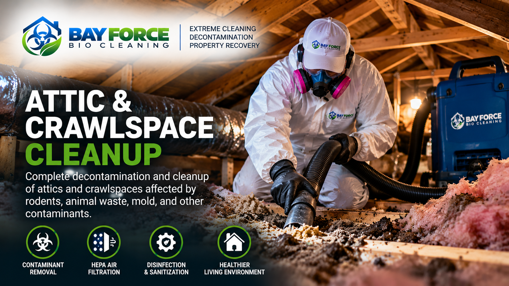

ATTIC & CRAWLSPACE CLEANING
Attic & Crawlspace Cleaning & Decontamination
Professional attic and crawlspace cleaning and decontamination for properties affected by rodent droppings, urine, nesting materials, animal waste, odors, debris, and other contamination. Bay Force Bio Cleaning uses HEPA-filtered equipment and professional decontamination methods to help safely clean and restore affected areas.

OUR APPROACH
Professional Attic & Crawlspace Cleaning Services
Debris Cleanup
Removal of accumulated debris and contaminated materials from accessible attic and crawlspace areas.
Rodent Contamination Cleanup
Removal of rodent droppings, urine-contaminated materials, nesting debris, and other rodent contamination from affected attic and crawlspace areas.
Animal Waste Cleanup
Professional cleaning of attic and crawlspace areas affected by animal waste, feces, urine, odors, and related contamination.
HEPA Filtration
HEPA filtration equipment may be used when appropriate to help manage airborne particles during cleanup.
Professional Decontamination
Cleaning and decontamination using professional products and procedures appropriate to the conditions encountered.
Odor Treatment
Additional odor-treatment options may be available for persistent odors in affected spaces.
THE BAY FORCE PROCESS
Our Attic & Crawlspace Cleaning Process
1. Evaluate
We evaluate accessible areas and identify the conditions requiring specialized cleanup.
2. Protect
Appropriate personal protective equipment and procedures are used based on the conditions encountered.
3. Clean & Decontaminate
Debris and contamination are addressed using appropriate professional cleaning procedures.
4. Recover
Our goal is to leave affected areas cleaner and more manageable.
SERVING THE NORTH BAY & SAN FRANCISCO
Attic & Crawlspace Cleaning Across Sonoma, Marin, Napa & San Francisco
Bay Force Bio Cleaning provides specialized attic and crawlspace cleanup throughout Sonoma County, Marin County, Napa County and San Francisco.
A VARCAL COMPANY
Need Professional Attic or Crawlspace Cleaning?
Tell us about the property and the conditions you are dealing with. Our team can review the information and help determine the appropriate next step.